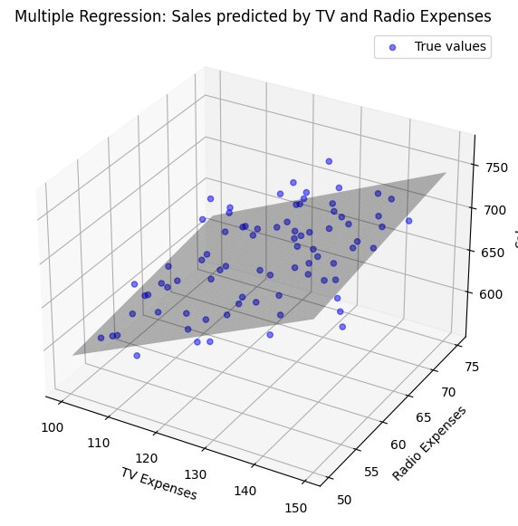

28 Multiple Linear Regression
28.1 Multiple Linear Regression
Multiple Linear Regression (MLR) is a statistical technique used to understand the relationship between one dependent variable and two or more independent variables. The relationship is explained by by modeling the observed relationship using a mathematical representation or approximation.
28.1.1 Key Components in MLR:
Dependent Variable (Y): The outcome variable or the variable that is potentially going to change due to influencing factors.
Independent Variables (X1, X2, …, Xn): Predictor or influencing variables used to predict the dependent variable.
Regression Coefficients (β0, β1, …, βn): Parameters that represent the relationship between each independent variable and the dependent variable where β0 is the intercept, β1 to βn are the slopes for each independent variable.
Error Term (ε): Represents the random variability in the dependent variable that might perhaps not be explained by the independent variables.
28.1.2 Model Equation:
\[ Y = \beta_0 + \beta_1X_1 + \beta_2X_2 + \ldots + \beta_pX_p + \varepsilon \]

28.2 Assumptions:
- Linearity: it is assumed that the relationship between the dependent and independent variables is linear.
- Independence: Observations are independent of each other.
- Homoscedasticity: The variance of the residuals (errors) is constant across all levels of the independent variables.
- Normality: Residuals are normally distributed.
- No Multicollinearity: Independent variables are not highly correlated with each other.
28.3 Purpose:
To predict the value of the dependent variable based on the values of the independent variables and to understand the strength and type of relationships between the dependent variable and multiple independent variables.
28.4 Steps in Conducting MLR:
- Data Collection: Gather data for the dependent and independent variables.
- Model Specification: Define the model equation with the dependent variable and chosen independent variables.
- Estimation of Coefficients: Use statistical software to estimate the regression coefficients.
- Model Evaluation: Assess the model’s goodness-of-fit using R-squared, adjusted R-squared, and other metrics.
- Diagnostic Checking: Check the assumptions of MLR (linearity, independence, homoscedasticity, normality, no multicollinearity).
28.5 Model Evaluation Metrics:
- R-squared (R²): Measures the proportion of variance in the dependent variable explained by the independent variables.
- Adjusted R-squared: Adjusted version of R² that accounts for the number of predictors in the model.
- F-statistic: Tests the overall significance of the model.
- p-values: Test the significance of individual regression coefficients.
28.6 Demostration
We perform a multiple linear regression analysis on a dataset of medical insurance costs. This dataset includes variables such as age, sex, BMI, number of children, smoker status, and region. Our goal is to understand the relationship between these variables and to predict insurance charges based on the other factors.
The data of insurance could be found from Kagglelink
# Load the data
data <- read_csv("../data/04_insurance.csv")Rows: 1338 Columns: 7
── Column specification ────────────────────────────────────────────────────────
Delimiter: ","
chr (3): sex, smoker, region
dbl (4): age, bmi, children, charges
ℹ Use `spec()` to retrieve the full column specification for this data.
ℹ Specify the column types or set `show_col_types = FALSE` to quiet this message.# Preview the data
head(data)# A tibble: 6 × 7
age sex bmi children smoker region charges
<dbl> <chr> <dbl> <dbl> <chr> <chr> <dbl>
1 19 female 27.9 0 yes southwest 16885.
2 18 male 33.8 1 no southeast 1726.
3 28 male 33 3 no southeast 4449.
4 33 male 22.7 0 no northwest 21984.
5 32 male 28.9 0 no northwest 3867.
6 31 female 25.7 0 no southeast 3757.28.6.1 Summary Statistics
We begin by examining the summary statistics of the dataset to understand its structure and the distribution of variables.
summary(data) age sex bmi children
Min. :18.00 Length:1338 Min. :15.96 Min. :0.000
1st Qu.:27.00 Class :character 1st Qu.:26.30 1st Qu.:0.000
Median :39.00 Mode :character Median :30.40 Median :1.000
Mean :39.21 Mean :30.66 Mean :1.095
3rd Qu.:51.00 3rd Qu.:34.69 3rd Qu.:2.000
Max. :64.00 Max. :53.13 Max. :5.000
smoker region charges
Length:1338 Length:1338 Min. : 1122
Class :character Class :character 1st Qu.: 4740
Mode :character Mode :character Median : 9382
Mean :13270
3rd Qu.:16640
Max. :63770 we will first log-transform the charges variable. This is often done to stabilize variance and make the data more normally distributed, which can help improve the performance and interpretation of regression models.
# Log-transform the charges variable
data$log_charges <- log(data$charges)Before fitting the model, we need to ensure that our categorical variables are correctly encoded.
Before converting to factors:
sex: Character values
“female”, “male”.
smoker: Character values
“no”, “yes”.
region: Character values
“northeast” “northwest” “southeast” “southwest”.After converting to factors:
sex:
Factor with levels
1 = “female”,
2 = “male”.
smoker:
Factor with levels
1 = “no”,
2 = “yes”.
region:
Factor with levels
1 = “northeast”, 2 = “northwest”, 3 = “southeast”, 4 = “southwest”.
28.6.2 Model Fitting
We fit a multiple linear regression model to predict insurance charges based on the other variables in the dataset.
# Fit the multiple linear regression model
model <- lm(log_charges ~ age + sex + bmi + children + smoker + region,
data = data)
# Summary of the model
summary(model)
Call:
lm(formula = log_charges ~ age + sex + bmi + children + smoker +
region, data = data)
Residuals:
Min 1Q Median 3Q Max
-1.07186 -0.19835 -0.04917 0.06598 2.16636
Coefficients:
Estimate Std. Error t value Pr(>|t|)
(Intercept) 7.0305581 0.0723960 97.112 < 2e-16 ***
age 0.0345816 0.0008721 39.655 < 2e-16 ***
sexmale -0.0754164 0.0244012 -3.091 0.002038 **
bmi 0.0133748 0.0020960 6.381 2.42e-10 ***
children 0.1018568 0.0100995 10.085 < 2e-16 ***
smokeryes 1.5543228 0.0302795 51.333 < 2e-16 ***
regionnorthwest -0.0637876 0.0349057 -1.827 0.067860 .
regionsoutheast -0.1571967 0.0350828 -4.481 8.08e-06 ***
regionsouthwest -0.1289522 0.0350271 -3.681 0.000241 ***
---
Signif. codes: 0 '***' 0.001 '**' 0.01 '*' 0.05 '.' 0.1 ' ' 1
Residual standard error: 0.4443 on 1329 degrees of freedom
Multiple R-squared: 0.7679, Adjusted R-squared: 0.7666
F-statistic: 549.8 on 8 and 1329 DF, p-value: < 2.2e-16Coefficients and Interpretation:
Intercept: The intercept of the model is 7.0305581, which represents the expected log of charges when all predictors are zero. This value is highly significant with a p-value less than 2e-16.
Age: For each additional year of age, the log of charges increases by 0.0345816. This effect is highly significant with a p-value less than 2e-16.
Sex (male): Being male decreases the log of charges by 0.0754164 compared to being female. This effect is significant with a p-value of 0.002038.
BMI: Each unit increase in BMI results in an increase in the log of charges by 0.0133748. This effect is highly significant with a p-value of 2.42e-10.
Number of children: Each additional child increases the log of charges by 0.1018568. This effect is highly significant with a p-value less than 2e-16.
Smoking status (yes): Being a smoker increases the log of charges by 1.5543288. This effect is highly significant with a p-value less than 2e-16.
Region (northwest):Living in the northwest region decreases the log of charges by 0.0637876 compared to the baseline region. This effect is marginally significant with a p-value of 0.067860.
Region (southeast): Living in the southeast region decreases the log of charges by 0.1571967 compared to the baseline region. This effect is highly significant with a p-value of 8.08e-06.
Region (southwest): Living in the southwest region decreases the log of charges by 0.1289522 compared to the baseline region. This effect is significant with a p-value of 0.000241.
The model explains approximately 76.79% of the variance in the log of charges, as indicated by the multiple R-squared value of 0.7679 and the adjusted R-squared value of 0.7666.
The overall model is highly significant, as indicated by the F-statistic of 549.8 with a p-value less than 2.2e-16.
28.7 Conclusion
Our multiple linear regression model suggests that age, sex, BMI, number of children, smoking status, and region are significant predictors of log-transformed insurance charges.
Specifically, older age, higher BMI, more children, and being a smoker are associated with higher log-transformed insurance charges. In contrast, being male and residing in the northwest, southeast, or southwest regions tends to be associated with lower log-transformed insurance charges compared to their respective reference categories.